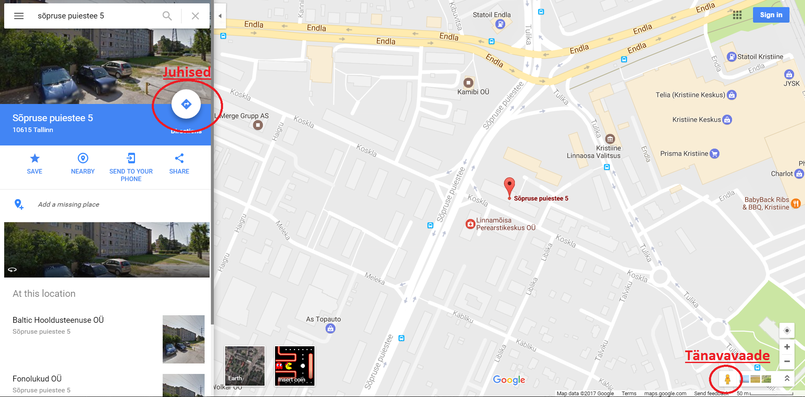

Klaviatuuri klahvid


Tänapäeval on mitmeid erinevaid veebilehti, mis teevad teie liiklemise päevast päeva elus kergemaks. Te saate vaadata mis teed pidi kõndida mis suunas, kust minna millise bussi peale, millal mis iganes rong sõidab soovitud linna poole ja nii edasi.
Soiduplaan on tallinna linnavalitsuse poolt haldatud leht, kus on võimalik ühistranspordi graafikuid järgi vaadata. Seal saate te näiteks vaadata mis kell lahkub number 17 buss Taksopargi peatusest ning mis kell see jõuab teie poolt soovitud peatusesse.
Selle jaoks on lihtsalt vaja minne lehele Soiduplaan.tallinn.ee, valida ülevalt paremalt navigatsiooni ribalt mis tüüpi ühistranspordi sõiduk teid huvitab ning sealt edasi valida spetsiifiline sõiduki number, et näha selle kohta täpsemat informatsiooni.
Elron.ee on elektrirongi koduleht. Sealt saab vaadata millise rongi peale minna, et jõuda teie poolt soovitud linna, mis kell see peatub mis peatuses ning kui palju see pilet teile maksma läheb. Samuti on võimalik osta interneti teel ette ka rongi pilet, et selle üle ei peaks rongi peal muretsema. On vaja ainult valida sõidu lähtekoht ehk alguspunkt, sihtkoht ehk sõidu lõpp punkt ning kuupäev. Siis pakub Elroni leht teile kõiki sõite, mis sellel kuupäeval nende kahe linna vahel sõidavad.
T-Pilet.ee on sarnane Elroni kodulehega, kuid selle juures on tegemist bussi sõitudega. Sealt saab vaadata erinevate bussi firmade poolt pakutud sõite koos ühelt lehelt. Nagu ka Elronis on ka siin vaja valida nii lähtekoht kui ka sihtkoht, et teha otsingut.
Maps.Google.com on Google'i poolt pakutud kaarditarkvara, kus on võimalik vaadata kaarti terve maailma kohta, näha tänavaid tänavaates ning saada juhiseid et liigelda punktist A punktini B mis iganes liiklus vahendiga, olgu see siis autoga, ühistranspordiga või jalgsi. Selle jaoks on vaja ainult otsida oma poolt soovitud asukohta ning siis see viib sind juba seda lähemalt vaatama.
Kui otsing on tehtud, siis saate sealt juba otsustada edasi, kas te tahate vaadata juhendaid kuidas sinna saada või hoopiski vaadata seda asukohta tänavavaates.
Et vaadata juhiseid tuleb vajutada juhiste nupu peale ning et näha tänavavaadet, on vaja tõsta alt paremal olev mees hiirega selle koha peale kaardil, mida te tahate tänavavaatel näha.
Parool kõikide kasutajate jaoks on "kristiine".
Gmail on kõige populaarsem emaili klient, mille läbi saab saata ja vastu võtta emaile. Emaili teel toimub enamus interneti kommunikatsioonist ning seega on soovitatav kõikidel seda kasutada. Sellega saab pidada kirjavestlust, saada arveid, saata pilte/videosid/dokumente/õnnitlus kaarte jne
Proovige saata ise endale email, kuhu te olete lisanud manusesse pildi.
Kui te olete selle edukalt teinud, saabub see sama kiri teile postkasti mõne minuti jooksul.
Et näha teile saadetud kirju, tuleb minna oma postkasti kausta vajutades selle peale vasaku klahviga. Postkastis kirja avamisekse on vaja selle kirja pealkirja peale vajutada vasaku klahviga.